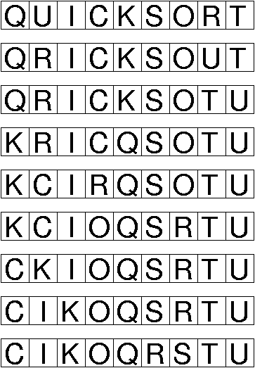
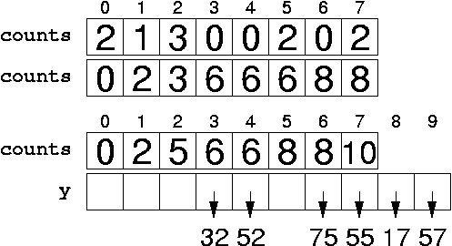

Problem 1. (9 points) A Miscellany.
b. The minimum spanning tree of G has all the edges of G incident on vertex 1 (and no others).
c. + * ^ 7 3 2 * / 4 8 5
d. Θ(n log n). Note the similarity to mergesort's recursion tree.
e. O(x5 / log x), O(x!), Θ(0.5 x4 — 220 x3 log x + √x), Ω(3).
Problem 2. (10 points) Sorting.
a. 
b. Θ(n log n).
c. 
d. (Let me grade this.)